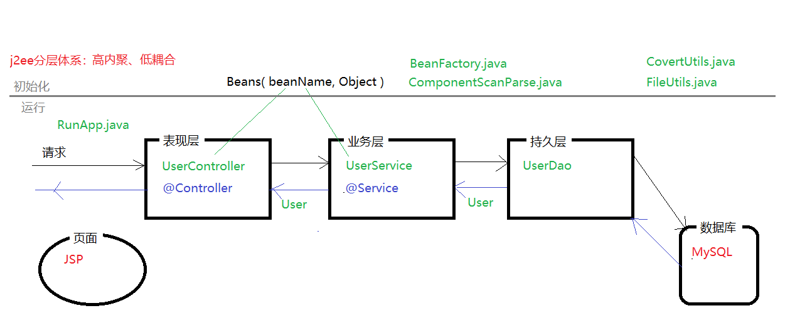
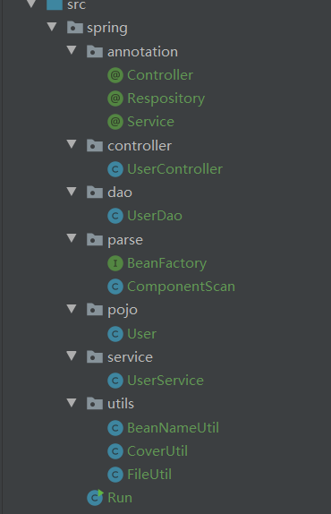
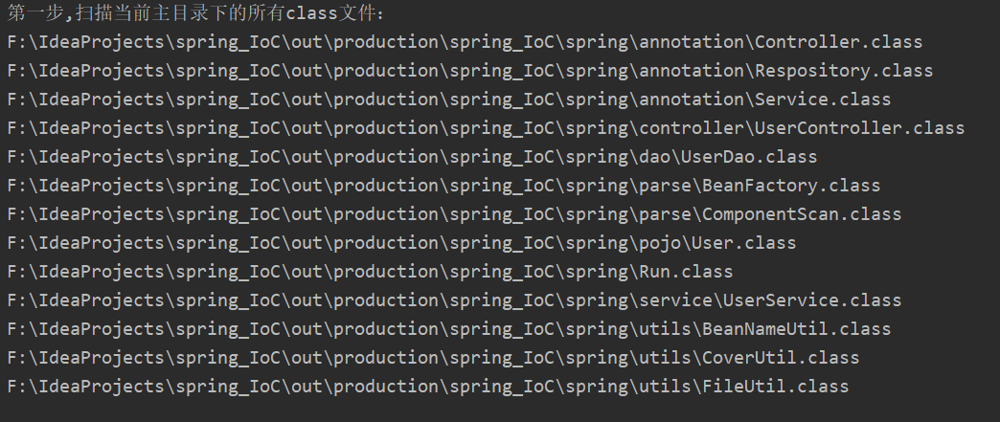
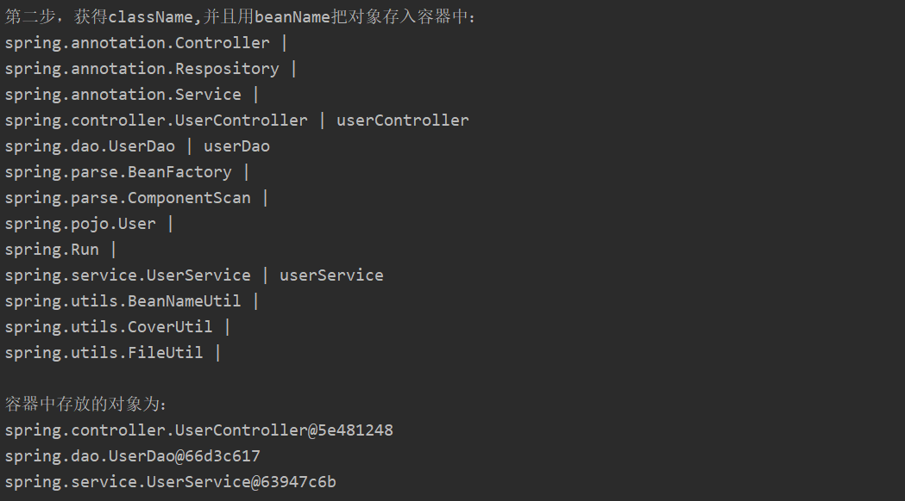
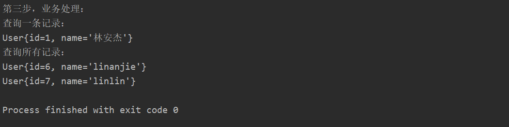

前言：本人大四学生，第一次写博客，如果有写得不好的地方，请大家多多指正
传统开发都是需要对象就new，但这样做有几个问题：
于是有人就提出了IoC控制反转概念，干嘛我不先创建好呢？如果用户要使用时，我都已经创建好了，用户不就能立马使用了？这就有点像好莱坞法则：“你别找我，我去找你”。
IoC不是一种技术，只是一种思想，一个重要的面向对象编程的法则，它能指导我们如何设计出松耦合、更优良的程序。传统应用程序都是由我们在类内部主动创建依赖对象，从而导致类与类之间高耦合，难于测试；有了IoC容器后，把创建和查找依赖对象的控制权交给了容器，由容器进行注入组合对象，所以对象与对象之间是松散耦合，这样也方便测试，利于功能复用，更重要的是使得程序的整个体系结构变得非常灵活；
我个人对IoC是这样简单理解的：
1）对象不是new出来的，而是通过反射事先创建出来的
2）既然事先创建出来，在用之前就得找个地方放起来，放哪里呢？就放在一个Map<String, Object>集合中
• 怎么获取要创建的对象？
• 怎么把目录名转换为类名？
• 怎么把类名转换为beanName？
• 哪些类需要创建对象？怎么过滤掉不需要创建对象的类？
• 容器中该怎么存放对象？
• 怎么调用容器中存放的对象？
• 设计分层结构：高内聚，低耦合（相当于专做一件事，不要把使用功能都写在一起）
在这里简单模拟查询用户信息，实际应用中更复杂，但是万变不离其宗，弄懂原理才是重要的
1)架构图

2)代码结构图
在IDEA中的结构示意图（eclipse也差不多，我用的是IDEA）:

各包名以及文件名含义（文件名可能会和架构图中的一些文件名不一致，因为架构图是之前画的，但不影响阅读，大同小异）：
annotation包：用来存放注解，在本案例中需要创建对象的类为控制层类、业务层类、持久层类；所有需要3个注解，通过注解的方式来过滤掉不需要创建对象的类，Controller注解是加在控制层，Service注解加在业务层，Respository注解加在持久层；3个注解都是位于类上，保留到运行时期；
pojo包：设置一个pojo类，里面含有一些简单属性；
dao包：模拟持久层，由于本案例是一个简单例子，主要用于初学者查看，所有没有安装数据库，正常情况下持久层应该与数据库进行对接，没有安装数据库，所有就由持久层模拟数据库；
service包：模拟业务层，业务层调用持久层；
controller包：模拟控制层，控制层调用业务层；
utils包：工具类包；
parse包：因为我们采用了分层结构，所以在使用之前，应当把这些组件扫描加载到一起；现在都是面向接口进行开发，这样可以提高程序的灵活性，面向接口开发，同时也体现了JAVA的多态性；
Run文件就相当于整个程序的入口。
1）pojo类(User.java)
1 package spring.pojo;
2
3 /**
4 * @Auther: 林安杰
5 * @Date: 2019/9/28 19:28
6 * @Description:创建pojo对象，简单设置属性以及get,set,toString方法
7 */
8 public class User {
9 private Integer id;
10 private String name;
11
12 public Integer getId() {
13 return id;
14 }
15
16 public void setId(Integer id) {
17 this.id = id;
18 }
19
20 public String getName() {
21 return name;
22 }
23
24 public void setName(String name) {
25 this.name = name;
26 }
27
28 @Override
29 public String toString() {
30 return "User{" +
31 "id=" + id +
32 ", name='" + name + '\'' +
33 '}';
34 }
35 }
2)注解
①Respository.java
1 package spring.annotation;
2
3 import java.lang.annotation.ElementType;
4 import java.lang.annotation.Retention;
5 import java.lang.annotation.RetentionPolicy;
6 import java.lang.annotation.Target;
7
8 /**
9 * @Auther: 林安杰
10 * @Date: 2019/9/28 19:31
11 * @Description:dao层类注解
12 */
13
14 @Target(ElementType.TYPE) // 注解加在类上
15 @Retention(RetentionPolicy.RUNTIME) // 保留到运行时
16 public @interface Respository {
17 }②Service.java
1 package spring.annotation;
2
3 import java.lang.annotation.ElementType;
4 import java.lang.annotation.Retention;
5 import java.lang.annotation.RetentionPolicy;
6 import java.lang.annotation.Target;
7
8 /**
9 * @Auther: 林安杰
10 * @Date: 2019/9/28 19:33
11 * @Description:业务层注解
12 */
13
14 @Target(ElementType.TYPE)
15 @Retention(RetentionPolicy.RUNTIME)
16 public @interface Service {
17 }③Controller.java
1 package spring.annotation;
2
3 import java.lang.annotation.ElementType;
4 import java.lang.annotation.Retention;
5 import java.lang.annotation.RetentionPolicy;
6 import java.lang.annotation.Target;
7
8 /**
9 * @Auther: 林安杰
10 * @Date: 2019/9/28 19:34
11 * @Description:控制层注解
12 */
13
14 @Target(ElementType.TYPE)
15 @Retention(RetentionPolicy.RUNTIME)
16 public @interface Controller {
17 }3）持久层（UserDao.java）
1 package spring.dao;
2
3 import spring.annotation.Respository;
4 import spring.pojo.User;
5
6 import java.util.ArrayList;
7 import java.util.List;
8
9 /**
10 * @Auther: 林安杰
11 * @Date: 2019/9/28 19:36
12 * @Description:dao层,模拟数据库数据
13 */
14
15 @Respository
16 public class UserDao {
17 // 模拟查询一条记录，根据进行id查询
18 public User selectOne(Integer id) {
19 User user = new User();
20 user.setId(id);
21 user.setName("林安杰");
22 return user;
23 }
24
25 // 模拟查询所有记录
26 public List<User> get() {
27 // 用一个集合来存放所有对象
28 List<User> userList = new ArrayList<>();
29
30 User u1 = new User();
31 u1.setId(6);
32 u1.setName("linanjie");
33 userList.add(u1);
34
35 User u2 = new User();
36 u2.setId(7);
37 u2.setName("linlin");
38 userList.add(u2);
39 return userList;
40 }
41
42
43 }4）业务层（UserService.java）
1 package spring.service;
2
3 import spring.annotation.Service;
4 import spring.dao.UserDao;
5 import spring.pojo.User;
6
7 import java.util.List;
8
9 /**
10 * @Auther: 林安杰
11 * @Date: 2019/9/28 19:48
12 * @Description:业务层，从dao层中获取数据
13 */
14
15 @Service
16 public class UserService {
17 private UserDao userDao; // 把dao层的对象设置为私有成员变量，才能访问dao层中的方法（组合）
18
19 // 关系绑定（set注入）
20 public void setUserDao(UserDao userDao) {
21 this.userDao = userDao;
22 }
23
24 // 查询一条记录
25 public User getOne(Integer id) {
26 return userDao.selectOne(id);
27 }
28
29 // 查询所有记录
30 public List<User> queryAll() {
31 return userDao.get();
32 }
33 }5）控制层（UserController.java）
1 package spring.controller;
2
3 import spring.annotation.Controller;
4 import spring.pojo.User;
5 import spring.service.UserService;
6
7 import java.util.List;
8
9 /**
10 * @Auther: 林安杰
11 * @Date: 2019/9/28 19:53
12 * @Description:控制层,调用业务层
13 */
14
15 @Controller
16 public class UserController {
17 private UserService userService; // 把业务层对象设置为私有成员变量
18
19 // set注入，实现关系绑定
20 public void setUserService(UserService userService) {
21 this.userService = userService;
22 }
23
24 // 查询一条记录
25 public User getOne(Integer id) {
26 return userService.getOne(id);
27 }
28
29 // 查询多条记录
30 public List<User> queryAll() {
31 return userService.queryAll();
32 }
33 }6）工具类
①FileUtil.java
1 package spring.utils;
2
3 import java.io.File;
4 import java.util.List;
5
6 /**
7 * @Auther: 林安杰
8 * @Date: 2019/9/28 19:58
9 * @Description:文件扫描工具类
10 */
11
12 public class FileUtil {
13 // 扫描所有.class文件,并存入数组中
14 public static List<String> getFileNameList(String dir, List<String> fileNameList) {
15 File file = new File(dir); // 把string类型转换为file类型
16 File[] files = file.listFiles(); // 遍历当前路径下的所有文件（遍历出来的是：所有文件名+所有目录名）
17 for (File f :
18 files) {
19 if (f.isDirectory()) { // 判断当前文件是不是目录，是的话就递归遍历目录中的内容
20 getFileNameList(f.getAbsolutePath(), fileNameList);
21 } else {
22 fileNameList.add(f.getAbsolutePath()); // 不是目录就是文件，将文件添加到数组当中
23 }
24 }
25 return fileNameList;
26 }
27 }
②CoverUtil.java
1 package spring.utils;
2
3 import java.util.List;
4
5 /**
6 * @Auther: 林安杰
7 * @Date: 2019/9/28 21:30
8 * @Description:统一把路径符替换为“/”，路径符有“//”、“\”，统一后就没有差异性了
9 */
10 public class CoverUtil {
11 // 从存放所有class文件的fileNameList集合中取出每一个文件名（全局限定名），替换为类名形式（包名.类名）
12
13 /**
14 * @param baseDir 基准路径
15 * @param fileNameList 存放所有文件全集限定名的数组
16 * @return
17 */
18 public static List<String> getClassNameList(String baseDir, List<String> fileNameList) {
19 // 把基准路径中的路径符统一
20 baseDir = baseDir.replace("\\", "/");
21 for (int i = 0; i < fileNameList.size(); i++) {
22 // 获取数组中的元素
23 String fileName = fileNameList.get(i);
24
25 // 把元素（全集限定名）中的路径统一
26 fileName = fileName.replace("\\", "/");
27
28 // 把全集限定名中前面一样的基准路径替换为空串
29 fileName = fileName.replace(baseDir, "");
30
31 // 把替换掉的字符串去掉.class后缀
32 int pos = fileName.lastIndexOf(".");
33 fileName = fileName.substring(0, pos);
34
35 // 把字符串的路径符替换为“.”
36 fileName = fileName.replace("/", ".");
37
38 // 把最终的类名继续放回数组中
39 fileNameList.set(i, fileName);
40 }
41 return fileNameList;
42 }
43 }③BeanNameUtil.java
1 package spring.utils;
2
3
4 /**
5 * @Auther: 林安杰
6 * @Date: 2019/9/28 23:06
7 * @Description:把className转换为beanName
8 */
9 public class BeanNameUtil {
10 public static String getbeanName(String className) {
11 // 截取后面的类名
12 int pos = className.lastIndexOf(".") + 1;
13 className = className.substring(pos);
14 // 类名的第一个字母小写，后面的不变
15 String beanName = className.toLowerCase().charAt(0) + className.substring(1);
16 return beanName;
17 }
18 }7）组件扫描
①BeanFactory.java
1 package spring.parse;
2
3 import java.util.List;
4
5 /**
6 * @Auther: 林安杰
7 * @Date: 2019/9/28 23:26
8 * @Description:面对接口开发；需要设计一个接口
9 */
10 public interface BeanFactory {
11 public List<String> scan(String dir);
12
13 public void creat(String baseDir, List<String> fileNameList) throws Exception;
14
15 public <T> T getObject(String beanName);
16 }②ComponentScan.java
1 package spring.parse;
2
3 import spring.annotation.Controller;
4 import spring.annotation.Respository;
5 import spring.annotation.Service;
6 import spring.utils.BeanNameUtil;
7 import spring.utils.CoverUtil;
8 import spring.utils.FileUtil;
9
10 import java.util.ArrayList;
11 import java.util.HashMap;
12 import java.util.List;
13 import java.util.Map;
14
15 /**
16 * @Auther: 林安杰
17 * @Date: 2019/9/28 22:30
18 * @Description:扫描所有需要的组件，并利用反射创建对象，把对象放在容器中
19 */
20 public class ComponentScan implements BeanFactory{
21
22 private static final Map<String, Object> beans = new HashMap<>();
23
24 // 扫描所有class文件
25 public List<String> scan(String dir) {
26 List<String> fileNameList = new ArrayList<>();
27 FileUtil.getFileNameList(dir, fileNameList);
28 // 遍历查看数组的内容
29 for (String fileName :
30 fileNameList) {
31 System.out.println(fileName);
32 }
33 return fileNameList;
34 }
35
36 // 通过反射根据注解创建对象，并把对象放在容器中
37 public void creat(String baseDir, List<String> fileNameList) throws Exception {
38 List<String> classNameList = CoverUtil.getClassNameList(baseDir, fileNameList);
39
40 // 遍历类名数组查看内容，并根据是否有注解创建对象
41 for (String className : classNameList) {
42 String beanName = "";
43 Class<?> clazz = Class.forName(className);
44 // 获取类上的注解
45 Controller ca = clazz.getAnnotation(Controller.class);
46 Service sa = clazz.getAnnotation(Service.class);
47 Respository ra = clazz.getAnnotation(Respository.class);
48
49 // 若注解不为空，就创建对象
50 if (ca != null || sa != null || ra != null) {
51 Object obj = clazz.newInstance();
52
53 /*把对象存放在容器中，容器为Map键值对，值就是对象，key用className表示太复杂，把className转换成beanName
54 className的形式：spring.pojo.User；beanName的形式：user；所以需要写一个转换的方法
55 */
56 beanName = BeanNameUtil.getbeanName(className);
57
58 // 把对象存放到容器当中
59 beans.put(beanName, obj);
60 }
61 System.out.println(className + " | " + beanName);
62 }
63
64 // 查看容器中存放的对象
65 System.out.println("\n容器中存放的对象为：");
66 for (String key : beans.keySet()) {
67 System.out.println(beans.get(key));
68 }
69 }
70
71 // 从容器中获取对象
72 public <T> T getObject(String beanName){
73 return (T) beans.get(beanName);
74 }
75 }8）程序入口（Run.java）
1 package spring;
2
3 import spring.controller.UserController;
4 import spring.dao.UserDao;
5 import spring.parse.BeanFactory;
6 import spring.parse.ComponentScan;
7 import spring.pojo.User;
8 import spring.service.UserService;
9
10 import java.util.List;
11
12
13 /**
14 * @Auther: 林安杰
15 * @Date: 2019/9/29 12:53
16 * @Description:程序入口
17 */
18 public class Run {
19 public static void main(String[] args) throws Exception {
20 // 面对接口开发，体现了多态性（向上造型）
21 BeanFactory context = new ComponentScan();
22
23 // 先扫描所有class文件
24 System.out.println("第一步,扫描当前主目录下的所有class文件：");
25 // 不能把路径写死，可以根据API获取路径
26 String baseDir = Run.class.getResource("/").getPath().substring(1);
27 String packageDir = Run.class.getPackage().getName();
28 String dir = baseDir + packageDir.replace(".", "/");
29 List<String> fileNameList = context.scan(dir);
30
31 System.out.println("\n第二步，获得className,并且用beanName把对象存入容器中：");
32 context.creat(baseDir, fileNameList);
33
34 System.out.println("\n第三步，业务处理：");
35 // 不能用new创建对象，需要从容器中获取对象
36 UserController userController = context.getObject("userController");
37 UserService userService = context.getObject("userService");
38 UserDao userDao = context.getObject("userDao");
39
40 // 关系注入，调用set方法
41 userController.setUserService(userService);
42 userService.setUserDao(userDao);
43
44 System.out.println("查询一条记录：");
45 User user = userController.getOne(1);
46 System.out.println(user);
47
48 System.out.println("查询所有记录：");
49 List<User> users = userController.queryAll();
50 for (User u : users) {
51 System.out.println(u);
52 }
53 }
54 }


这就是本期分享的内容，大家可以相互学习，后期会写Spring模拟实现DI（原理其实都差不多）